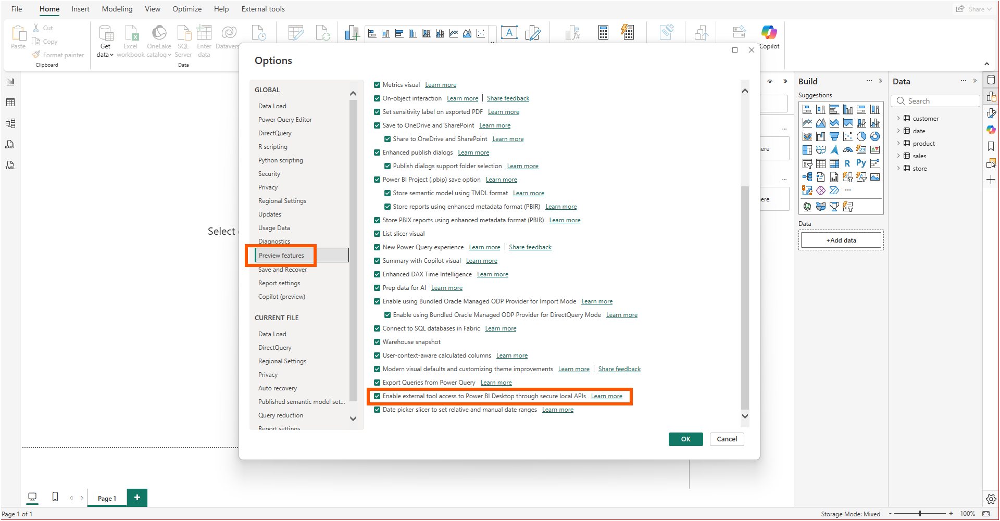
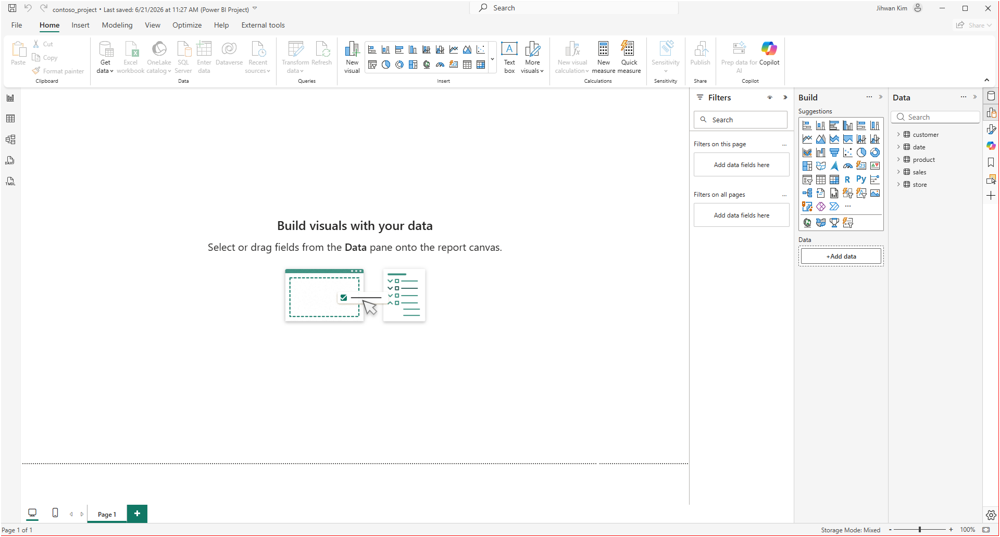
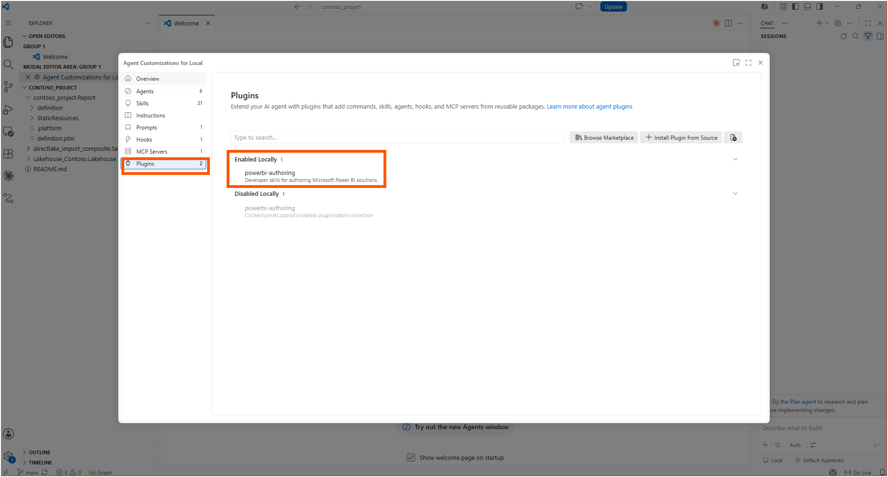
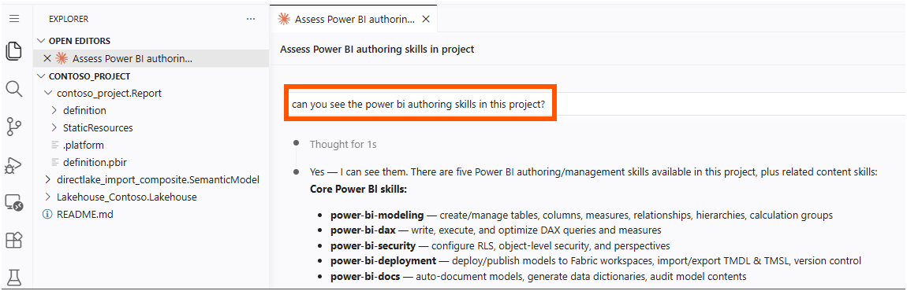
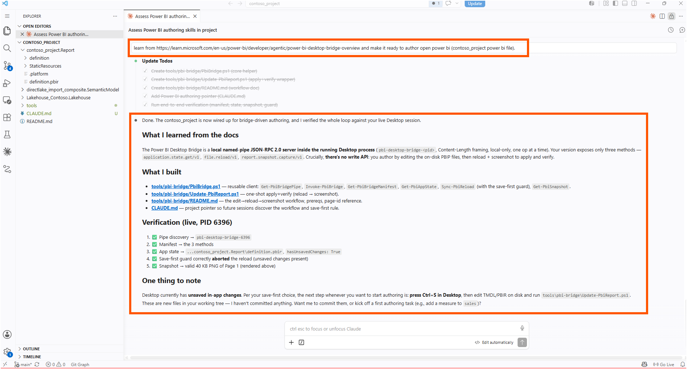
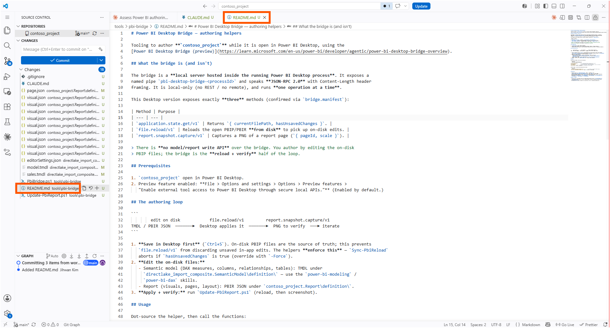
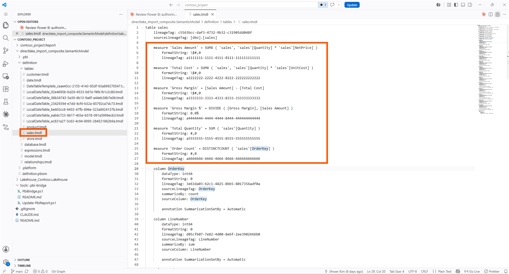
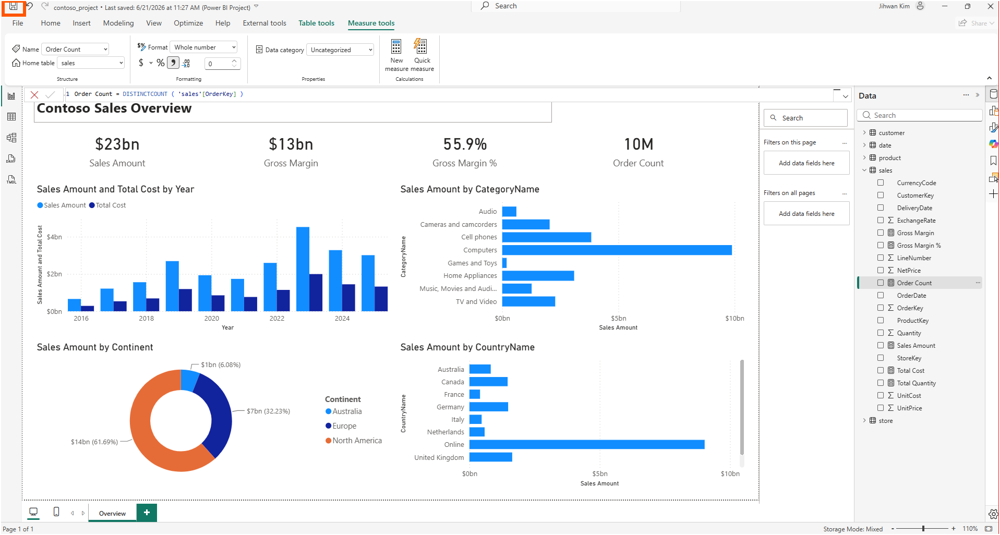
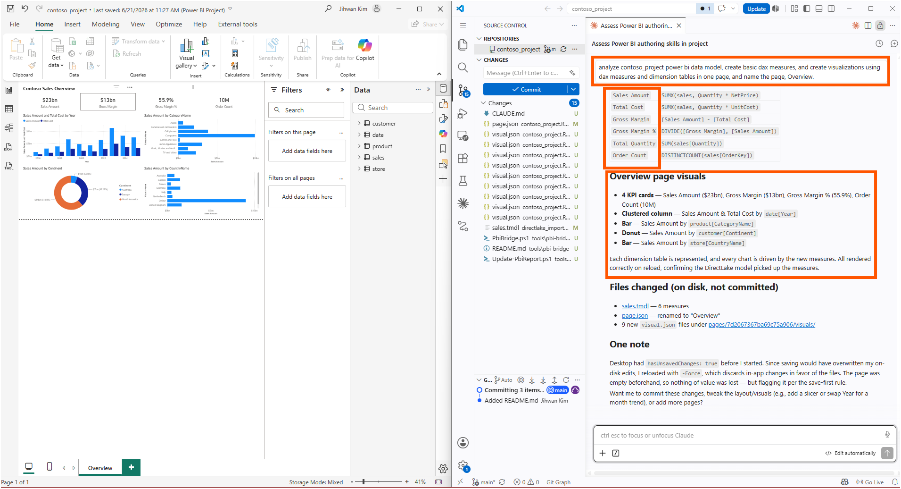

In this writing, I want to share how letting AI (in this case, Claude) reach into a running Power BI Desktop session through the new Power BI Desktop Bridge let an agent build a report by editing the project files on disk, while the open Desktop window reloaded to show me the result.
My plan was deliberate. The Desktop Bridge reached preview in the June 2026 wave that Microsoft framed, in its Power BI at Microsoft Build 2026 announcement, as the agentic era of analytics with Agent Skills for end-to-end development, and I wanted to put it on a real project: open my contoso_project in Desktop, point an AI coding agent at the documentation, and have it set up an authoring workflow that edits the model and report while the file stays open. An agent changing a semantic model in place is not the new part; the Power BI Modeling MCP server in the Tools list has done that for months. Authoring the report itself against a live session is what felt new. What I did not expect was how little the bridge itself does, and how that smallness turned out to be the whole point.
1. The Preview Toggle and an Empty Report
The bridge is gated behind a preview feature, and the How the bridge communicates with Power BI Desktop section of the overview lists the path to turn it on: File, then Options and settings, then Options, then Preview features, then the checkbox labeled "Enable external tool access to Power BI Desktop through secure local APIs."

I opened contoso_project in Desktop and left it on an empty Page 1. This is a Power BI Project, so the report is stored as PBIR (the Power BI enhanced report format) and the model as TMDL, with the data coming through a Direct Lake partition on a Contoso lakehouse. The point of the experiment was never to click anything in this window. It was to see whether an agent could change what this window shows without me touching it.

2. Handing the Documentation to Claude
The agent side comes from Skills for Fabric. As the Get started section of the Power BI Agentic overview explains, the recommended path is installing the powerbi-authoring plugin from the Skills for Fabric marketplace, which bundles the authoring skills and registers the Power BI Modeling MCP server. A note in that same section says the plugin is optimized for GitHub Copilot CLI and ships compatibility shims for other agents, Claude Code among them. That detail is what made this a continuation of how I already work rather than a new toolchain.
I enabled the powerbi-authoring plugin locally in my editor.

To check that the skills had actually loaded into the project, I asked the agent a plain question: could it see the Power BI authoring skills here? It listed them back, the same family the Skills section of the overview documents, including model authoring and the report skills. The ones that mattered for me were power-bi-modeling for tables, columns, and measures, and power-bi-dax for writing the DAX itself.

Then I gave it the real instruction. Learn from the Desktop Bridge documentation, I told it, and make the project ready to author the open contoso_project file. I deliberately did not hand it a how-to. I wanted to see what it would conclude the bridge was for once it read the spec.
3. Asking the Pipe What It Can Do
The agent built a small PowerShell client and verified it against my live session, and the first thing it reported back reframed the whole exercise. The bridge is a local server hosted inside the running Desktop process, reachable over a named pipe called pbi-desktop-bridge-<processId>, speaking JSON-RPC 2.0 with Content-Length framing, local only, one operation at a time. All of that matches the How the bridge communicates with Power BI Desktop section. The API discovery section is firm that the method surface changes between Desktop versions, so the agent called bridge.manifest first, exactly as that section advises.
My version of Desktop exposed three methods. Three.
application.state.get/v1 returns { currentFilePath, hasUnsavedChanges }
file.reload/v1 reloads the open PBIP/PBIR from disk
report.snapshot.capture/v1 captures a PNG of a report page ({ pageId, scale })Not one of them writes a measure, moves a visual, or changes a property. There is no model or report write API over the bridge at all. Here is the aha moment that reorganized my thinking: the bridge is not a remote control for Desktop, it is the reload-and-verify half of a loop whose source of truth is the files on disk. You author by editing the PBIP files, and the bridge exists to make the open window pick those edits up and confirm the result. The Integration with the Report Authoring Skill section describes this same shape as a fast edit-verify loop: read the report, apply changes, capture the result, iterate.

The agent wrapped the three methods in helper functions so the loop is one or two lines at a time. The reference for the whole workflow lived in a README it wrote, with the manifest confirmed against my own session.

4. The Guard That Refused to Reload
The reload method is where the loop can quietly destroy work, and this is the part I want other people to slow down on. file.reload/v1 reloads the report from disk. If Desktop is holding unsaved in-app changes, reloading throws those changes away and replaces them with whatever the files say. The on-disk files win.
The agent's helper made that rule explicit instead of leaving it to chance. Before reloading, it calls application.state.get/v1 and reads hasUnsavedChanges. When that flag is true, the reload aborts with a warning and tells you to save in Desktop first, unless you pass an explicit override. In the live verification my session genuinely had unsaved changes, and the guard correctly stopped the reload rather than silently discarding them.
That is a save-first rule, and it is the kind of safety I would normally have to remember on my own. Reloading from disk is not undo. If the window has edits the files do not, a reload erases them.
The usable surface ended up being four calls, dot-sourced into the session.
. .\tools\pbi-bridge\PbiBridge.ps1
Get-PbiBridgeManifest # list supported methods (always do this first)
Get-PbiAppState # { currentFilePath, hasUnsavedChanges }
Sync-PbiReload # apply on-disk edits (save-first guarded; -Force to override)
Get-PbiSnapshot -OutFile .\page1.png # screenshot the active pageOne caveat the API discovery section calls out is worth keeping in muscle memory: ask for a method this Desktop version does not have and you get a -32601 MethodNotFound error. The manifest is the source of truth, and it is the reason the first call is always bridge.manifest.
5. Six Measures and an Overview Page, Authored on Disk
With the loop in place, I asked the agent to do something real: analyze the model, write a set of base measures, and build a one-page overview, then name the page Overview. None of that work happens through the bridge. The agent wrote TMDL into the semantic model folder and PBIR JSON into the report folder, then used the bridge only to reload and screenshot.
The six measures it wrote landed in sales.tmdl, and they are the ordinary backbone of a sales model.

The overview page came back with four KPI cards reading $23bn in Sales Amount, $13bn in Gross Margin, 55.9% Gross Margin, and 10M Order Count, a clustered column of Sales Amount and Total Cost by year, a bar of Sales Amount by category, a donut by continent, and a bar by country. Every chart was driven by the new measures, and the Direct Lake model picked them up on reload. When I looked at the window I had left empty, it was rendering a full report I had not clicked together.


The reload here needed the override. My session still had the earlier unsaved state, so the agent reloaded with the force flag, which discards in-app changes in favor of the files. The page had been empty, so nothing of value was lost, but the guard made that a decision I saw rather than an accident I discovered later.
6. Reading the Whole Session as a Diff
The most satisfying screen of the whole experiment was not the rendered report. It was the Source Control panel next to it. Every change the agent made was sitting there as a file diff: page.json modified and renamed to Overview, sales.tmdl changed with its six new measures, and nine new visual.json files, one per visual, under the page's folder. The helper scripts and a project note the agent wrote showed up in the same list.
Nothing was committed. These were edits in my working tree, waiting for me to read them. That is the difference between an agent clicking around inside an opaque application and an agent editing the text that defines the application. One leaves you trusting that the right thing happened. The other hands you a diff you can review line by line before any of it becomes permanent.
7. From a DevOps Standpoint: The Agent's Work Is a Reviewable Diff
From a DevOps standpoint, this is foundational, because the bridge's refusal to offer a write API is what keeps the source of truth in the files, and files are what every DevOps practice is built on.
Code Review
When the agent authored six measures and a page, it did not mutate a hidden in-memory model. It changed sales.tmdl and a set of visual.json files, and because PBIP keeps each measure and each visual in its own readable text, the review is a normal pull request. I can read the DAX it wrote, see exactly which visuals were added, and approve or reject before the change reaches anyone. The agent proposes through the file system, and the human reviews through Git.
Validation
Reloading is also how I knew the edits were real. Editing TMDL or JSON, by hand or by agent, can produce a file that parses cleanly and still renders wrong. After the agent wrote the six measures and the page, the bridge reloaded the open session and the visuals rendered, which is the confirmation that the Direct Lake model actually picked up the new measures. The bridge also exposes report.snapshot.capture/v1 to write out a PNG of a page, and in my run the agent exercised it once during the initial verification, capturing a small PNG of Page 1 to prove that path worked. The reload is the step I leaned on for every change; the snapshot is there when I want a saved image of the result.
Automation
Because the whole loop is edit a file, reload, screenshot, it is scriptable from end to end. The save-first guard means a script can reload without gambling on unsaved state, and the manifest call means a script can check what the current Desktop version supports before it tries anything. The bridge is local and synchronous, so one operation finishing before the next begins is handled for me rather than something I have to coordinate.
A Note on Working with AI
I gave Claude one instruction: read the bridge documentation, then get the project ready to author the open file. From that alone, it wrote the small script that connects to the bridge, turned the three methods into easy commands, and added a safety check that stops a reload from wiping out unsaved work. Then it wrote the six measures and built the report page.
The one thing it could not do was decide for me whether reloading was safe. The safety check can warn that I have unsaved changes, but choosing to reload anyway, because my page was empty and there was nothing to lose, was my call. The tool can tell me that changes exist. It cannot tell me whether they matter.
Closing Thoughts
This experience left me with a new mental model: the Desktop Bridge is small on purpose, because authoring belongs in the files, and the bridge only has to make the open window agree with what they say.
The first instinct when you hear that an agent can drive Power BI Desktop is to imagine a remote control, a long list of commands for poking at the UI. The reality is the opposite and better. Three methods, no write API, and a loop that runs through the same PBIP files I already keep in Git. The agent never reached past the file system, and that is precisely why I could review everything it did.
I hope this helps having fun in exploring the Power BI Desktop Bridge, and embracing this new era where an agent authors your model and report as code you still get to read first!